Main Results compared with SoTA Image Generation Models
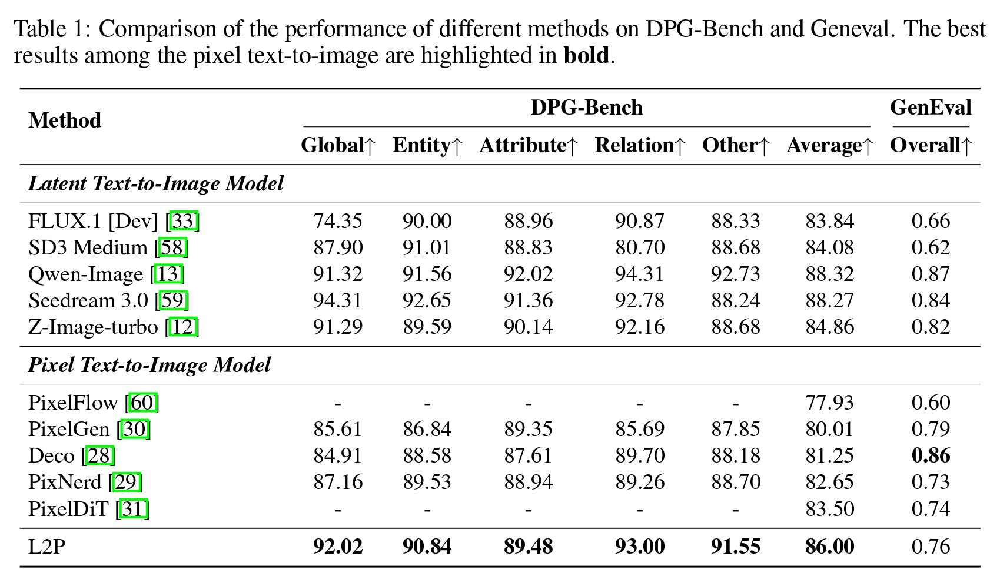
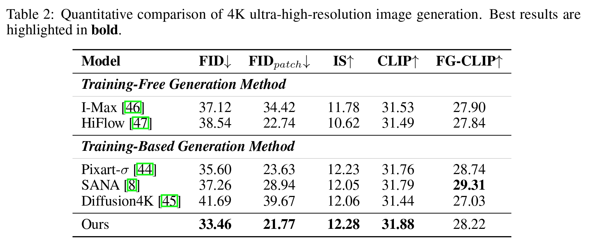
TL;DR: An efficient transfer paradigm enabling high-quality, end-to-end pixel-space diffusion with minimal computational overhead and data requirements.
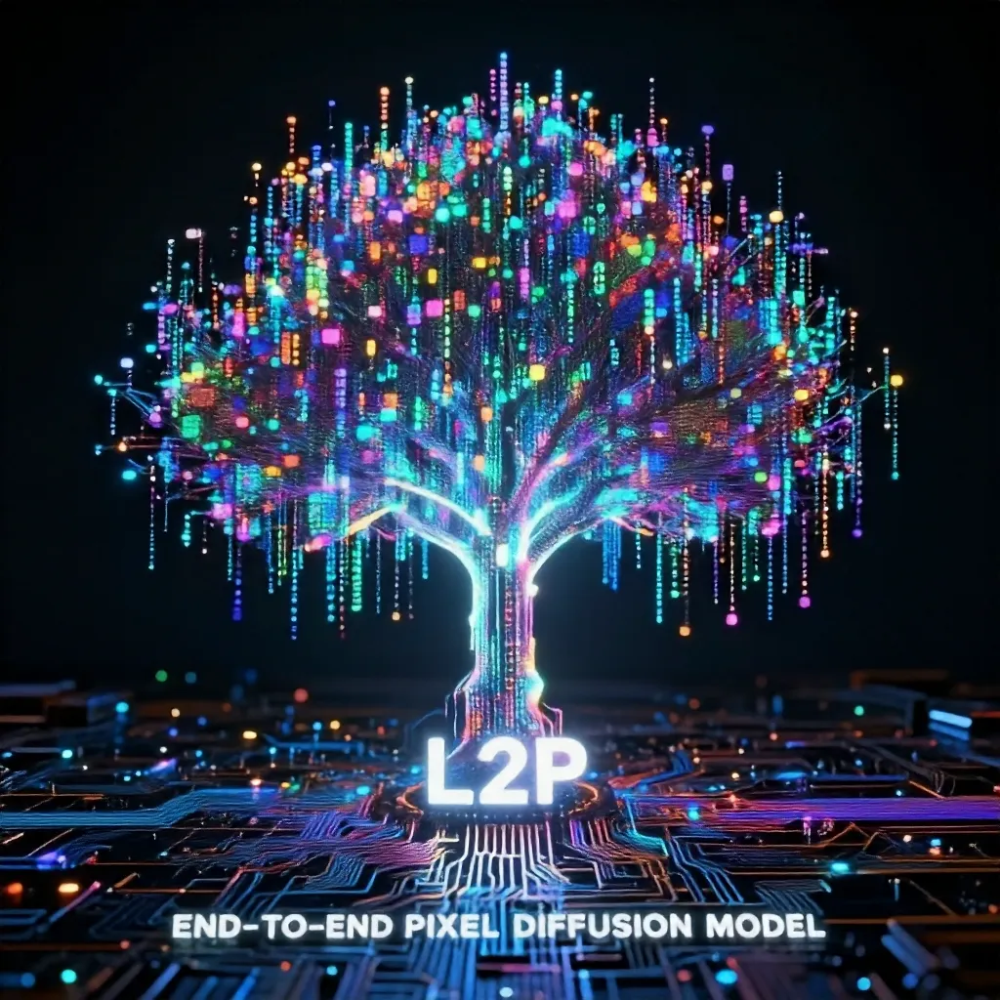
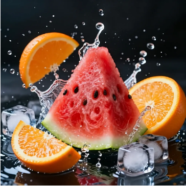
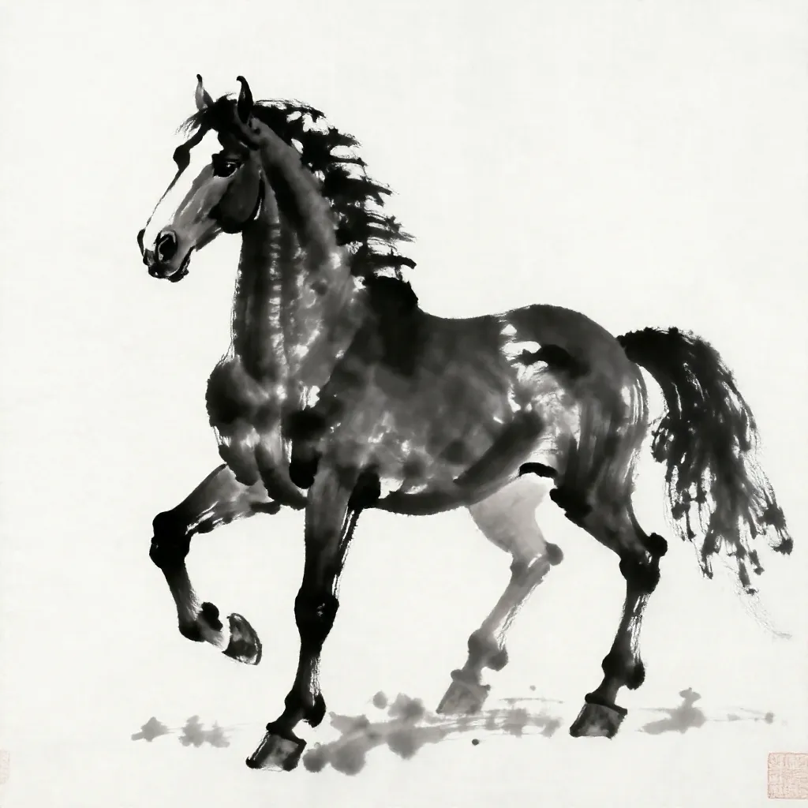
Pixel diffusion models have recently regained attention for visual generation. However, training advanced pixel-space models from scratch demands prohibitive computational and data resources. To address this, we propose the Latent-to-Pixel (L2P) transfer paradigm, an efficient framework that directly harnesses the rich knowledge of pre-trained LDMs to build powerful pixel-space models. Specifically, L2P discards the VAE in favor of large-patch tokenization and freezes the source LDM's intermediate layers, exclusively training shallow layers to learn the latent-to-pixel transformation. By utilizing LDM-generated synthetic images as the sole training corpus, L2P fits an already smooth data manifold, enabling rapid convergence with zero real-data collection. This strategy allows L2P to seamlessly migrate massive latent priors to the pixel space using only 8 GPUs. Furthermore, eliminating the VAE memory bottleneck unlocks native 4K ultra-high resolution generation. Extensive experiments across mainstream LDM architectures show that L2P incurs negligible training overhead, yet performs on par with the source LDM on DPG-Bench and reaches 93% performance on GenEval.
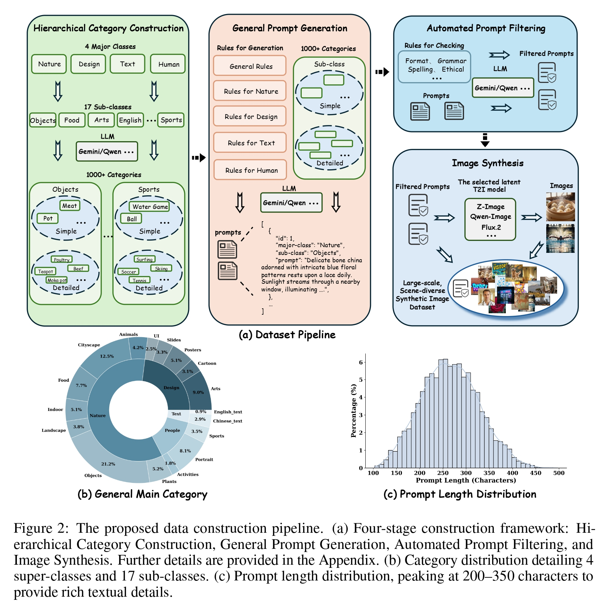
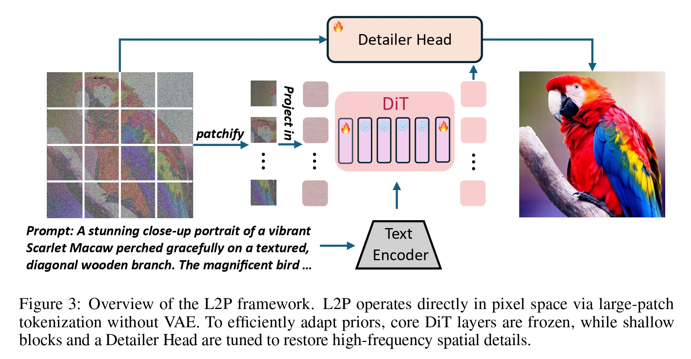


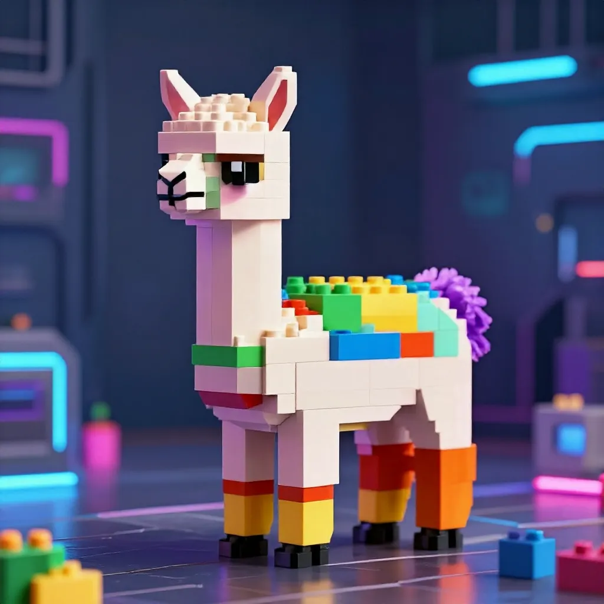
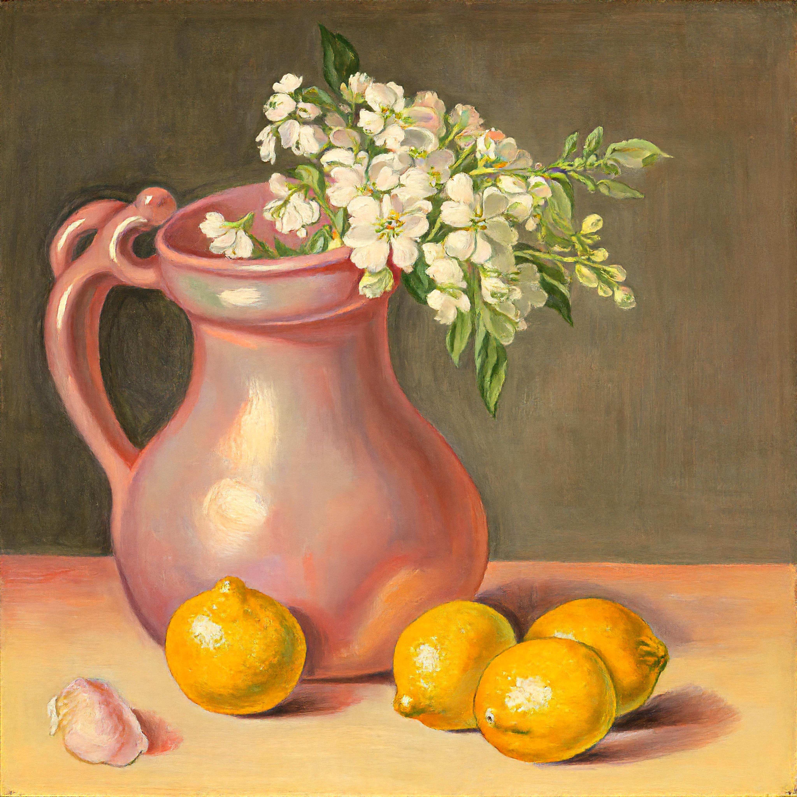
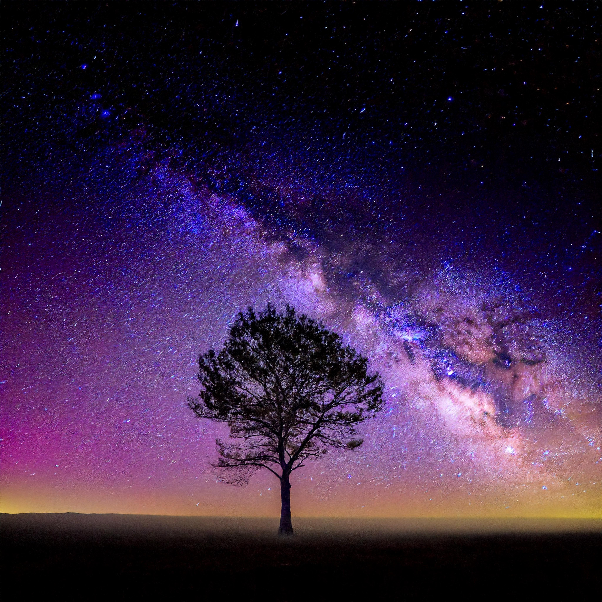
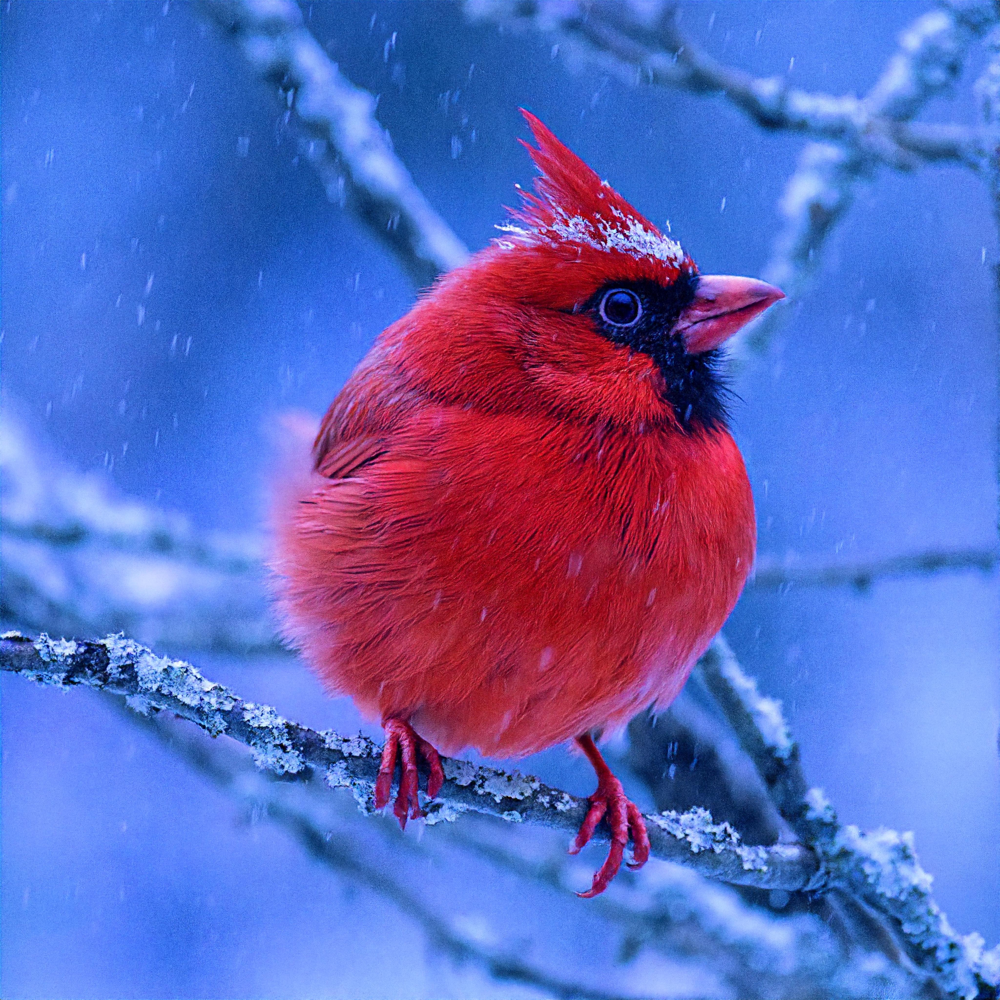


@article{chen2025dip,
title={Dip: Taming diffusion models in pixel space},
author={Chen, Zhennan and Zhu, Junwei and Chen, Xu and Zhang, Jiangning and Hu, Xiaobin and Zhao, Hanzhen and Wang, Chengjie and Yang, Jian and Tai, Ying},
journal={arXiv preprint arXiv:2511.18822},
year={2025}
}